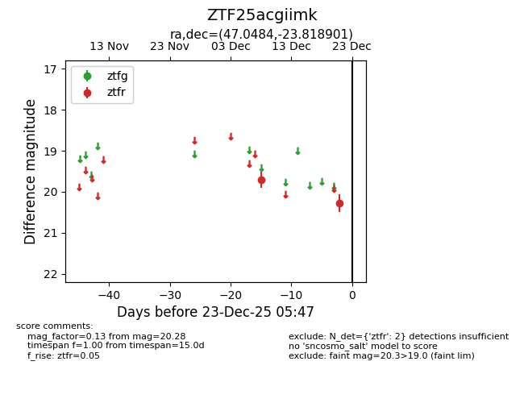
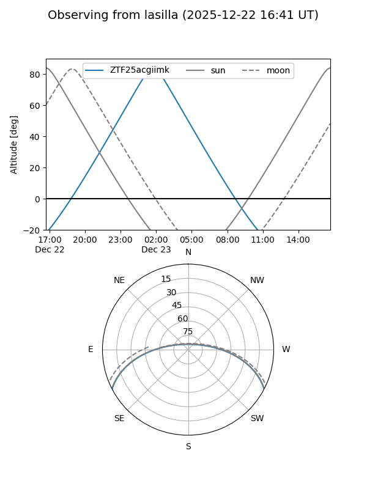
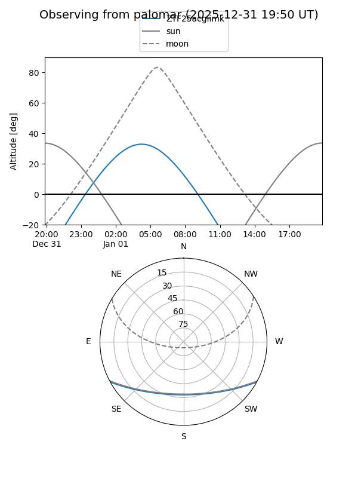

ZTF25acgiimk
Target ZTF25acgiimk at 2025-12-23 05:48
Aliases and brokers:
FINK: fink-portal.org/ZTF25acgiimk
Lasair: lasair-ztf.lsst.ac.uk/objects/ZTF25acgiimk
ALeRCE: alerce.online/object/ZTF25acgiimk
alt names
ZTF25acgiimk (ztf,fink_ztf)
Coordinates:
equatorial (ra, dec) = 47.0484,-23.81890
equatorial (HMS+DMS) = 03:08:11.61,-23:49:08.04
galactic (l, b) = (214.5321,-59.05182)
Flags:
Photometry:
last ztfr=20.28
2 ztfr detections
Lightcurve

Visibility


Additional plots